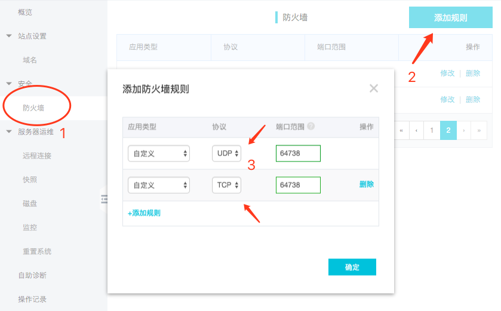
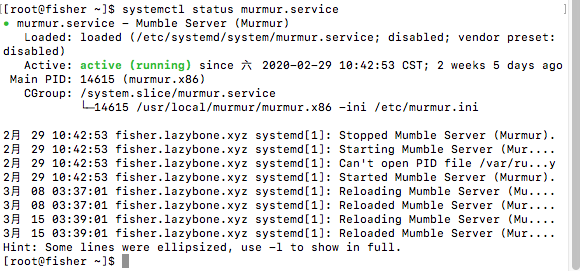
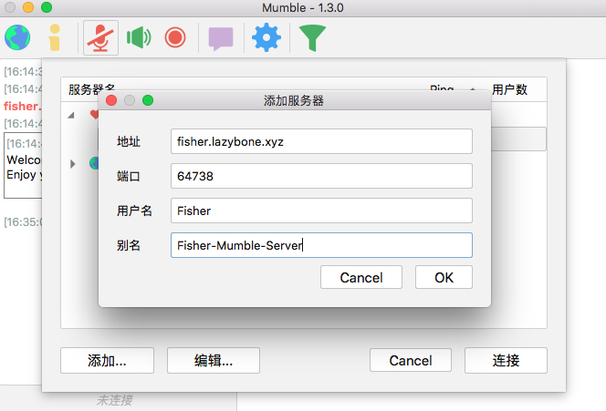
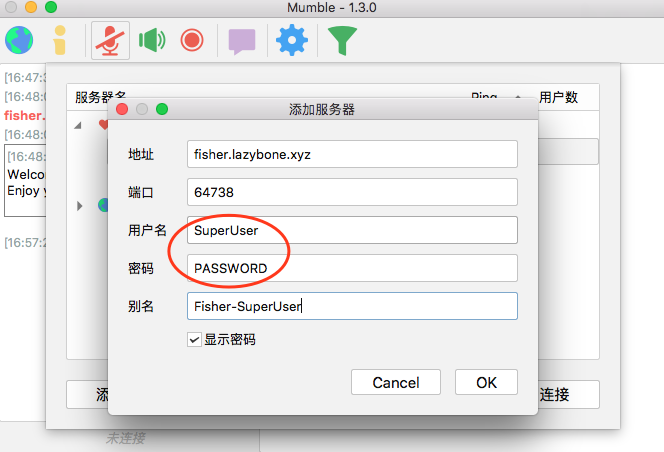

前言
之前与朋友一起在CSGO开黑时一直用的是微信语音，没有按键发言用的很不顺手。YY语音的广告太多不忍直视，Discord又被墙了。正好自己有个阿里云的服务器，就想着自己搭建一个语音服务器，也方便上网课的时候建立讨论组。于是乎上网查找了一番，找到了一个叫Mumble的语音软件，它的语音客户端全平台支持，官方的搭建文档介绍详细，简直就是开黑神器。话不多说，接下来就是我的搭建过程
下载Mumble服务器安装包
Mumble官方下载页面在这里，选择下载Static Linux Server，然后从浏览器的下载管理中把下载链接复制出来，在服务器上使用wget DOWNLOAD_ADDERSS下载（DOWNLOAD_ADDRESS为刚刚复制的下载链接）
如果官方链接太慢的话，我的服务器上也提供了Mumble V1.3.0的服务器安装包、Windows安装包、macOS安装包，需要的可以从这个页面找到并下载。使用我的服务器提供的下载地址下载Mumble Server：
1 | wget http://fisher.lazybone.xyz/downloads/software/murmur-static_x86-1.3.0.tar.bz2 |
解压安装包、添加用户和用户组
下载完安装包后，解压并移动到指定目录下。同时从安装包中复制一份配置文件到/etc中
1 | tar -vxjf ./murmur-static_x86-1.3.0.tar.bz2 |
创建用户、用户组、数据文件夹和日志文件夹。同时修改创建的文件和文件夹的权限、拥有者
1 | sudo groupadd -r murmur |
配置服务器参数
使用vim编辑murmur.ini文件
1 | vim /etc/murmur.ini |
指定以下3个参数
1 | database=/var/lib/murmur/murmur.sqlite |
以下参数可根据自己需要修改
1 | # 欢迎进入服务器信息，可以修改成自己喜欢的 |
添加系统服务模块
添加系统服务单元，以允许Mumble在后台运行
使用root权限创建murmur.service
1 | sudo vim /etc/systemd/system/murmur.serivce |
将以下数据复制到murmur.service中，然后保存退出
1 | [Unit] |
由于现在的操作系统会在重启时放弃var/run中的更改，为了重新创建Mumble的PID文件夹，我们需要创建murmur.conf文件
使用root权限创建murmur.conf
1 | sudo vim /etc/tmpfiles.d/murmur.conf |
将以下数据复制到murmur.conf中，然后保存退出
1 | d /var/run/murmur 775 murmur murmur |
配置日志文件
使用root权限创建murmur
1 | sudo vim /etc/logrotate.d/murmur |
将以下数据复制到murmur中
1 | /var/log/murmur/*log { |
配置防火墙
不同的云服务器商设置防火墙的方式不同。对于阿里云的轻量服务器，服务器的管理界面中点击防火墙，添加TCP和UDP的64738端口（端口根据上面配置文件改变而改变）

启动服务器
刷新系统服务
1 | sudo systemd-tmpfiles --create /etc/tmpfiles.d/murmur.conf |
允许开机自动启动Mumble服务
1 | sudo systemctl enable murmur.service |
正式启动Mumble服务器
1 | sudo systemctl start murmur.service |
当看到active(running)时，表示Mumble服务器启动成功

连接服务器，完成！
打开自己电脑上的Mumble，点击左上角小地球，点击添加，填入自己的服务器地址，用户名自己起一个喜欢的（不能是SpuerUser，这是Mumble管理员账号）。点击OK后连接，输入密码，大功告成！

进阶操作：添加、修改频道
如果使用的小伙伴太多了，需要分开不同的频道使用的时候，就需要使用SuperUser用户连接服务器并对root频道进行修改了。要使用SuperUser很简单，可以使用首次启动时系统随机分配的密码，也可以自己设置一个密码
对于系统随机分配的密码，使用以下命令：
1 | cat /var/log/murmur/murmur.log |
查找<W>year-month-day hour:min:sec 1 => Password for 'SuperUser' set to 'supersecretpassword'这条日志，密码就是那一串supersecretpassword。由于我的服务器用了好久了，那一串日志被覆盖掉了，这里就没有截图了（逃
对于自己设置一个密码，使用以下命令即可：
1 | cd /usr/local/murmur |
其中PASSWORD改成自己想要设定的密码。接下来在Mumble软件中添加自己的服务器，用户名使用SuperUser，密码填自己刚刚设置的密码

连接到服务器后，对着root频道右键，就可以进行频道添加、修改、删除的操作了。最后配置一下自己的音频输入输出，就可以愉快地与朋友开黑了！